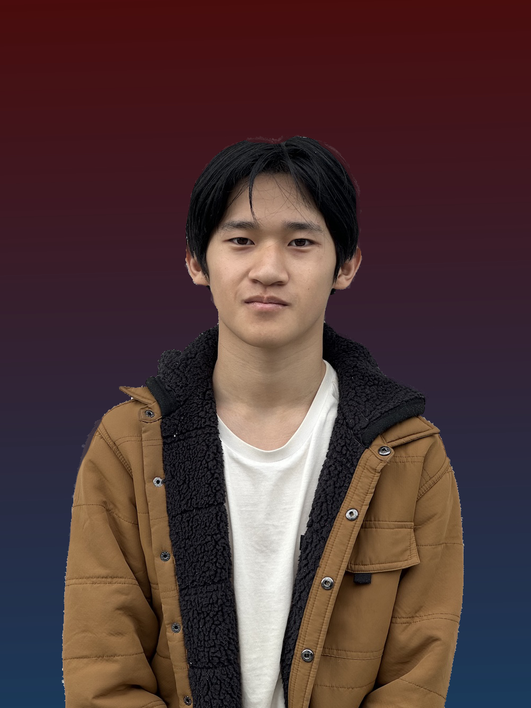
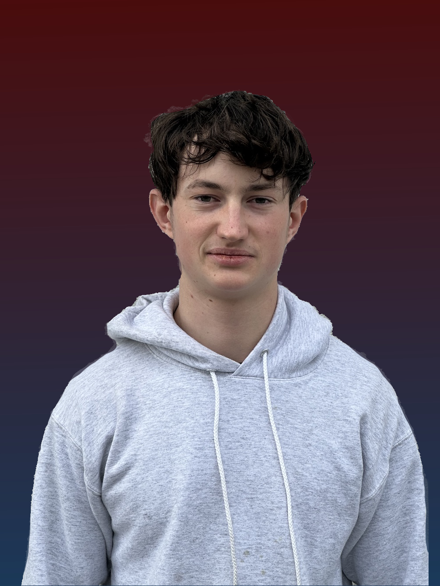
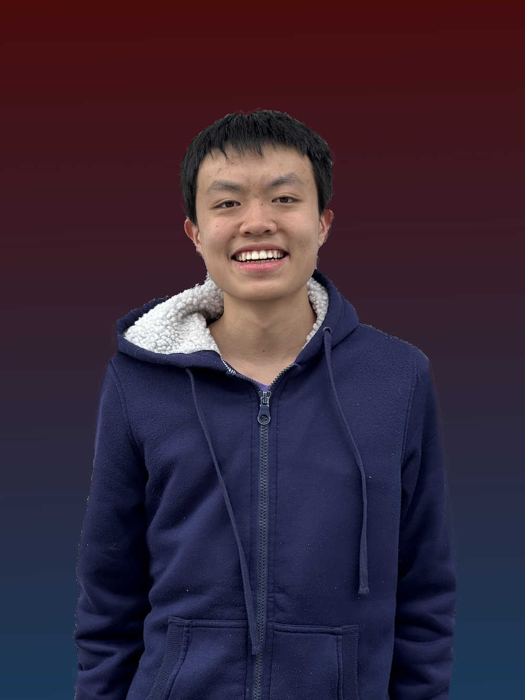
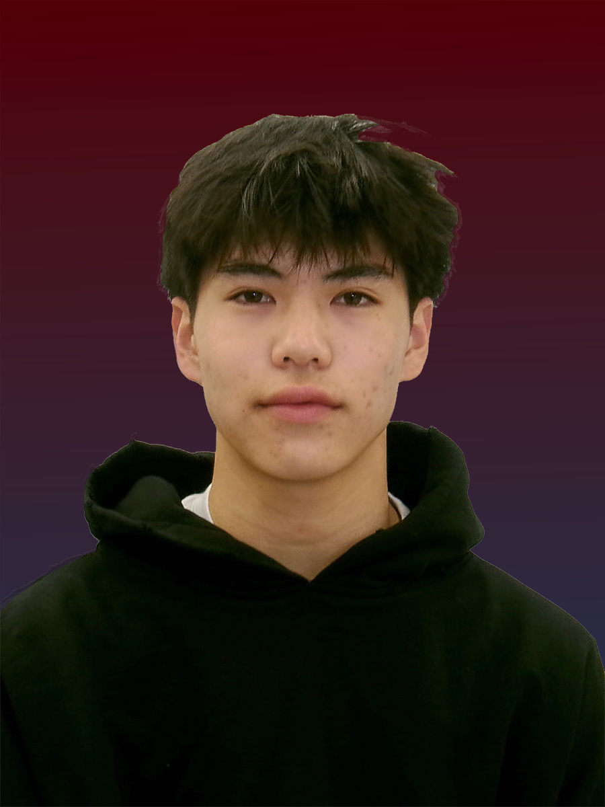
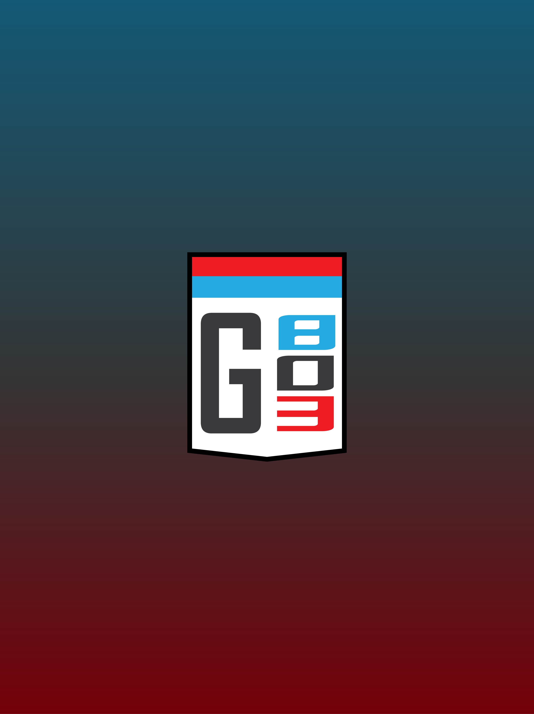
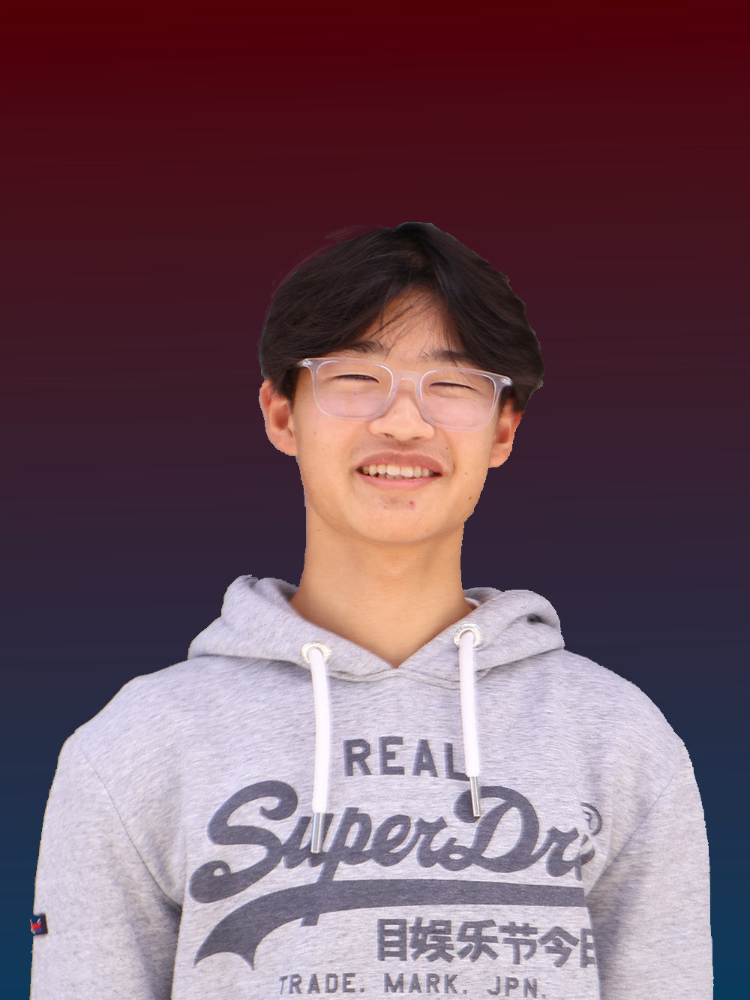
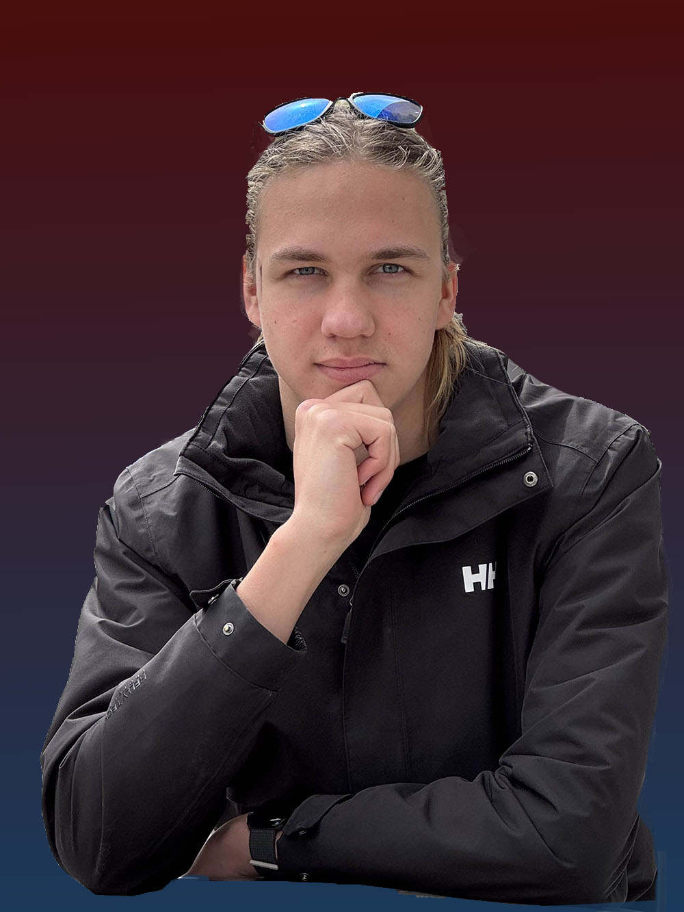
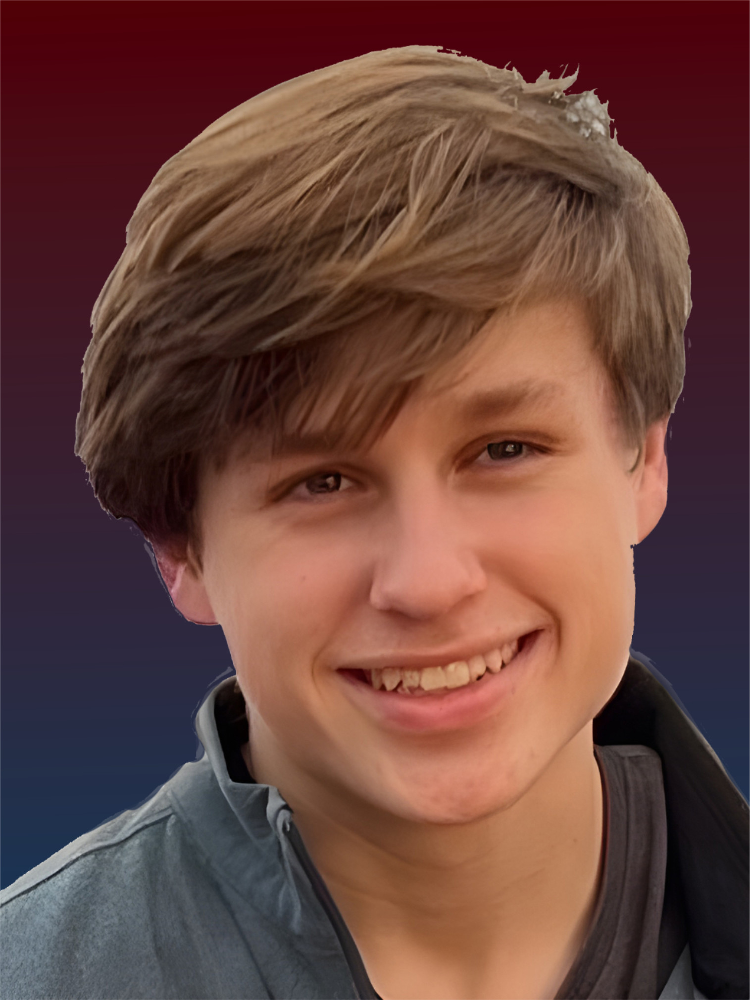
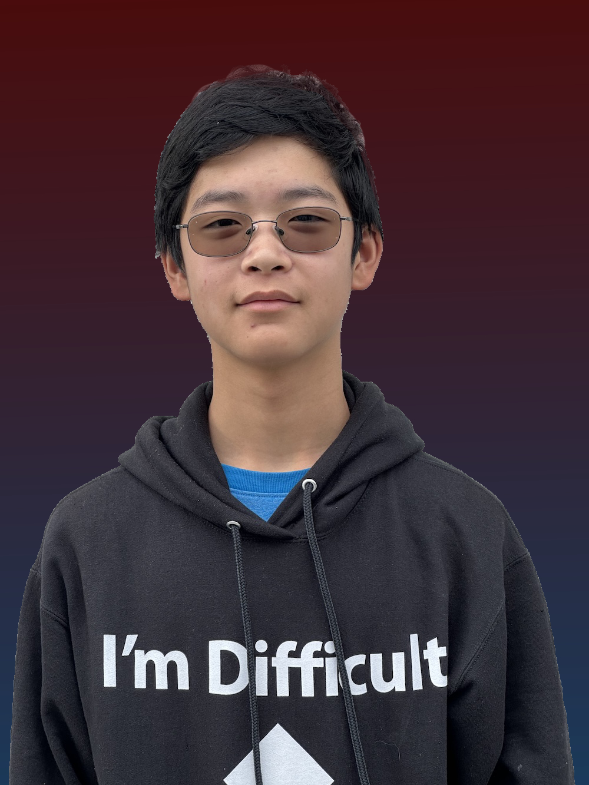
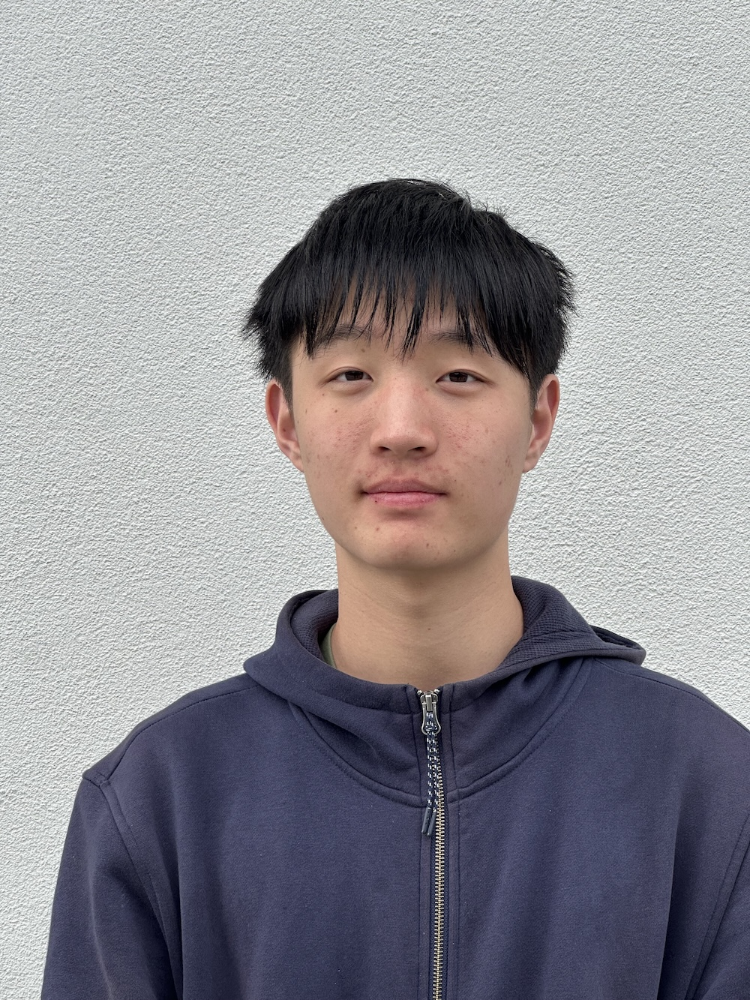

Ryan Liu
Co-President
Class of 2026
As a California native with a deep passion for engineering, I'm excited to share that enthusiasm with other students. I enjoy the outdoors—especially fishing and diving—as well as exploring new technologies and tackling hands-on engineering projects. Through Garage 803 Racing, I hope to inspire others with the same passion and am committed to seeing the initiative succeed, no matter the challenge.

Liam Abelson
Co-President
Class of 2027
I am interested in learning different types of engineering. I also enjoy playing soccer and play for the Mountain View High School team. I also like going to the gym. I am half Vietnamese half white. Some of my favorite activities are hanging out with friends and traveling.

Yuriy Korniychuk
Mechanical Lead
Class of 2026
I’m someone who enjoys building, fixing, and understanding how things work. I have a strong passion for engineering and love hands-on projects. One of my hobbies is designing, building and flying remote control aircraft. I love creating new things and I’m always looking for ways to apply engineering skills to solve problems and improve how things function.

Lezhi Zeng
Electrical Lead
Class of 2027
I like all kinds of engineering, from school electives to FIRST Robotics and the solar car team. I specialize in electrical systems but also work with computer science, CAD, and other mechatronics. Collaborating with others and exploring new ways to create are always my top priorities. In my free time, I enjoy art, photography, and studying architecture.

Aadi Joseph
Electrical Team
Class of 2027
I'm someone who enjoys hands-on work and likes building and fixing things. I enjoy travelling and hanging out with my freinds. As a hobby, I do MMA and teach middle schoolers at my local gym. In my free time I like to listen to music and enjoy learning new instruments.

Jerry Liang
Website Developer & Media
Class of 2026
Better at building cars than most web developers, and better at web development than most car builders. Through Garage 803 Racing I am proud to have taken part in the construction process and become the number 1 angle grinder user of the team.

Lukas Abelson
Mechanical Team
Class of 2029
I’m someone who enjoys building, experimenting, and learning by doing. I have a strong passion for engineering and love tackling hands-on projects. I enjoy exploring coding and problem-solving, and I’ve always been fascinated by rocket science. Through Garage 803 Racing, I’m excited to build on these interests, push my skills further, and continue expanding my knowledge.

Angela Liu
Mechanical & T-Shirt Design
+ Car Livery Visual
Class of 2028
I love the challenge of building something from scratch, which is what drew me to Garage 803 Racing. Among all kinds of engineering, mechanical is my favorite. In my free time, I enjoy digital art and mathematics.
Wilder White
Mechanical Team
Class of 2026
Hey! I’m Wilder, an aspiring aerospace engineer with a love for rocketry and all things space. I read often (Brandon Sanderson and Andy Weir are my favorite authors), and have two dogs fittingly named Nova and Luna. This project’s been a great way for me to stretch my engineering muscles and get to know my way around power tools!

Kai Amemiya
Mechanical Team &
2026 Race Safety Officer
Class of 2027

Adam Li
Mechanical Team
Class of 2027

Logan Barrett
Telemetry System Design
Class of 2027
Yonathan Har Gil
Early Season Contributor
Class of 2028

Tyler Wang
Early Season Contributor
Class of 2026
I was born in Shanghai and moved to the US when I was 6. With a life-long passion in motorsports and engineering, Garage 803 Racing was the perfect space to develop my interest and share it with others. Outside of solar car racing, I enjoy playing guitar, skiing, and working on engineering projects.

Carl Haller
Early Season Contributor
Class of 2026
I'm a hands-on problem solver with a passion for engineering and programming. Whether it's building a solar car, developing software, or experimenting with new tech, I enjoy tackling challenges and improving designs when I have time. In my free time, I like exploring new coding projects, learning about aerodynamics and mechanical engineering, and experimenting with everything related to light.

Will Schreiber
Early Season Contributor
Class of 2026
I've had a strong passion for learning how things work and building my own things for as long as I can remember, from go karts and robots to the computers I use everyday. I see Garage 803 Racing as an opportunity to expand my skill sets and pursue my hobbies, while at the same time working with the technology that will be crucial to our future. Outside of engineering I enjoy skiing, spending time outdoors, and video games.

Connor Wang
Early Season Contributor
Class of 2029
I am a high school freshman with a strong interest in STEM and engineering, especially hands-on building projects where I can apply my skills and experience. I am excited to continue growing and refining my technical abilities through Garage 803 Racing.
